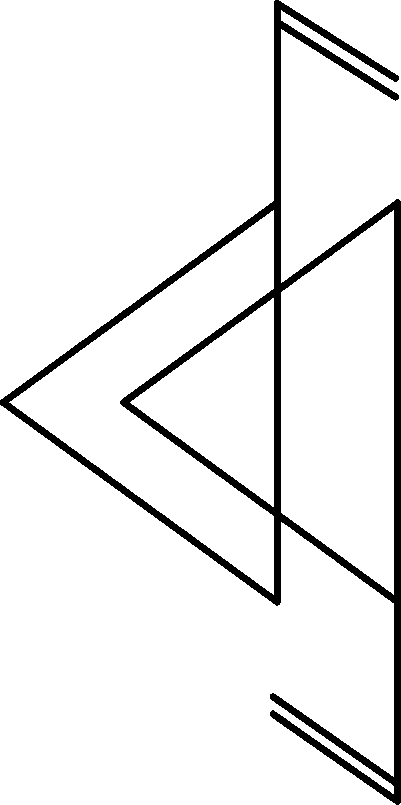

About me
"domen Gnezda is one of the most versatile guitarists in the country, working at the crossroads of jazz, blues, experimental and electroacoustic music, improvisation and contemporary classical. He stretches his string sounds into intense interstices between dissonance and consonance, between electric guitar sound and synthetic modulation, stretching, shredding, lengthening, overlapping, layering, fragmenting, texturalising, and introducing them into bouncing glitches. Gnezda's music thus straddles the line between physicallity, corporeality of sound, and transcending it, while sounding like a superb and singular hybrid between electronic music, idM, song form, and openness with quiet reminiscences of jazz and blues." (sonica, 2021)
I also enjoy programming in python, Front-end development, and Machine learning.
Projects
Skills
 HTML
CSS
SQL
Git
GitHub
HTML
CSS
SQL
Git
GitHub
